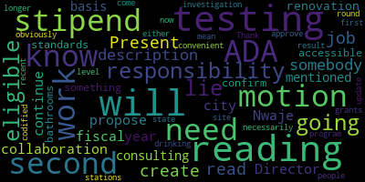
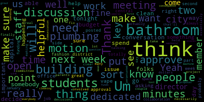
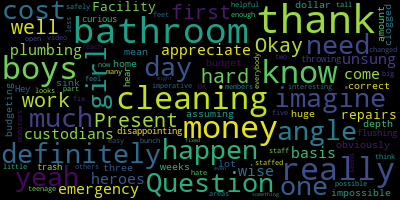

AI-generated transcript of 12.2.2024 - Regular MSC Meeting
English | español | português | 中国人 | kreyol ayisyen | tiếng việt | ខ្មែរ | русский | عربي | 한국인
Back to all transcripts
[Lungo-Koehn]: Good evening, we'll get started. The 19th regular meeting of the Medford School Committee will come to order. Tonight is December 2nd, 2024. Executive session will be at 515. Regular meeting, 6 p.m. Please be advised that there will be a meeting of the Medford School Committee held in the Howard Alden Memorial Chambers, Medford City Hall, and via remote participation. This meeting is being recorded. You can view through Medford Community Media on your local cable channel, Comcast Channel 9, 8, or 22. and Verizon 43, 45, or 47. Participants can log or call in by using the following Zoom link. Meeting ID is 955-4118-4223. I will call the roll. Member Reinfeld.
[Reinfeld]: Present.
[Lungo-Koehn]: Member Ruseau. On his way. On his way. Member Olapade.
[Olapade]: Present.
[Lungo-Koehn]: Member Intoppa. Member Graham?
[Graham]: Here.
[Lungo-Koehn]: Member Branley?
[Branley]: Present.
[Lungo-Koehn]: Six present, one on the way. If we all may rise to salute the flag.
[_OvxNEIZPH8_SPEAKER_09]: I pledge allegiance to the flag of the United States of America, and to the republic for which it stands, one nation under God, indivisible, with liberty and justice for all.
[Lungo-Koehn]: We have executive session, motion to enter into executive session pursuant to General Laws 30A, Section 21A3. The Medford School Committee will convene to discuss strategy with respect to litigation, executive session pursuant to Chapter 30A, Section 21-2, to conduct strategy in preparation with non-union personnel or contract negotiations with non-union personnel, our superintendent of schools. And the Medford School Committee will convene in public session immediately following the conclusion of his executive session at approximately 6 p.m. Is there a motion to enter executive session? Member Branley seconded by Member Olapade. I'll call the roll. Member Reinfeld? Yes. Member Olapade? Yes. Member Ruseau? On his way. Member Ruseau, a motion to enter executive session. Yes, yes. Member Tapa? Yes. Member Graham? Yes. Member Branley? Yes. Myself, yes. 70 affirmative, zero in the negative. We're going to move to executive session in room 207. And there's no heat, I apologize. No heat in 207? There should not. Is there a motion to suspend the rules? Motion to suspend the rules to take our rowing team motion by member Paper 6-2, out of order. All those in favor? Aye. All those opposed? Motion passes. Good evening and thanks for everybody's patience. Sorry we're a bit late. Number two is recognition of the Medford High School varsity rowing team. We have Ms. Rachel Perry, our director of health and PE, Mr. Frank O'Leary, and Ms. Suzanne Campbell, co-presidents of Medford Rowing and the students. Thank you. Ms. Perry.
[Rachel Perry]: Good evening, Superintendent Edouard-Vincent and members of the school committee. I am honored to recognize one of the hardest working teams in our athletic department. Our crew athletes work tirelessly on and off the water day in and day out for two seasons each year, working together to improve as a team and to reach their goals. On regatta days, they're often boarding buses at 5 a.m. to hit the road, and returning late afternoon into early evening. The commitment and dedication made by each of these athletes is truly remarkable. I'm going to ask Coach Starbrose to come up and to give you some more information about the highlights of their season.
[Starbrose]: Thank you, Superintendent and council members. Um, the crew team is combines of both boys and girls. And these kids are the hardest working kids I've seen in a long time. They are very dedicated. They work hard. And we not only do sweep throwing, we also do sculling. And we kind of concentrated a little this year more on sculling and it paid off by us achieving the team trophy at the state championships. And hopefully we can get the spring one also but. The kids are really dedicated, they're hard working, and I can't say enough for them, whether it's the boys team, the girls teams, the novice teams, they all work together, and each one pushes the other. My last year's senior boat, we pre-graduated 10 seniors last year. It was my second boat that was pushing them all season, which became I mean, our third boat, which was pushing them all the way, which jumped all the way to be the first boat this year. So we have some really good years coming ahead of us with a really bunch of kids. And I'd like to introduce one of the captains to speak, James Klugisch.
[Klugisch]: Good evening. I'm James Klugisch. I'm a junior at Medford High, and I'm a captain of the Medford rowing team. Yeah, this trophy, It says team, you know, there's a lot of, we have all these medals. You can see that a bunch of us are wearing. Those are for your boat, but this is about the team. And this team is how we got this trophy. I mean, every single person here really worked for it the entire season. Again, we pushed ourselves, you know, just to make it happen. And this is the first time we won it in team history, but although technically, yes, we have to bring it back next fall, I'm not planning to let this go anytime soon. So we'll keep going. Thank you very much.
[Lungo-Koehn]: Thank you, I'll turn it over to Dr. Edouard-Vincent to give you citations. Congratulations again.
[Edouard-Vincent]: Yes, congratulations on a job well done. I'm very proud of you. That trophy is quite heavy. So I am going to start with the girls team recognition. And if the person isn't here, we will just set them aside. So I have Lila Alberto. Abigail Charlton. Sabina Lee.
[Announcer]: Thank you. Thank you.
[Edouard-Vincent]: Megan Mattarisi. Kaitlin Matarazzo. Gianna Purifori. And Sarah Youssef. Congratulations to the girls. And now I'm gonna start with our boys team. Daniel Alberti D'Andrade.
[Lungo-Koehn]: Not here, okay.
[Edouard-Vincent]: Owen Barzak-Kroll. Omnia Benalia. Alex Bress. Robert Kearns. Scott Campbell. Mason Charon. James Cluggish. Addie Cruz. Raul Gonzalez IV. Henry Gregor. Benson Hargreaves. Carlos Laredo. Dexter McIntyre. Nicholas Matai. Harrison Muma. Peter Padilano. Ewan Reese. Santana Rose Russell.
[Lungo-Koehn]: Congratulations.
[Edouard-Vincent]: Congratulations. Adam Sayers.
[Lungo-Koehn]: Congratulations.
[Edouard-Vincent]: Matthew Stricker. Patrick Walden. And last but not least, Jaden Wu. Can we give another round of applause for our wonderful athletes? And can we have the athletes come in the inner circle with your trophy? So we can take a photo, a group photo. Either way, yeah, either side. Yeah, yeah, it's open, either way.
[Van der Kloot]: Come on, that's fine. Come on, come on.
[Lungo-Koehn]: Could coaches come as well, please? Member Intoppa.
[Intoppa]: If I could just say really quick before everyone leaves, I have a long history with Medford rowing. I actually was on one of the inaugural middle school sculling teams. So I actually learned how to scull before sweeping and went through the team in my seventh grade year and eighth grade year at the Andrews and then all four years of high school. I don't remember a time we've meddled this grand. First of all, during the fall season, kudos to you for being able to do that in a fall season, rolling those three miles up to the start and then the three miles all the way back and still being able to pull ahead. That's absolutely insane. But I was super proud and super impressed just to see this from you know, my time as a rower, my time as a coxswain at this height, which was crazy. Um, but then also my time as a coach during the pandemic. And then now like my favorite time of the year is getting to come and dock Marshall, the mayor's cup. Um, and I just, just absolutely so proud of you all just keep doing what you're doing and just see this. I didn't even think about it. So I was sitting here, this grand of an achievement in the fall season, just keep doing what you're doing. I'm so happy to see the team still going strong, even through the pandemic, now that we're, you know, where we are now. So just congratulations and keep doing what you're doing. Thank you.
[Lungo-Koehn]: Member Olapade.
[Olapade]: All right, here we go. So thank you so much. I also want to say as a former member of the Bedford rowing team, you know, I also was a middle school rower when I learned and I went through high school, I was elected captain my senior year. And for me, it was not only a piece of experience of leadership, but also to be a testament to what this team does and the impact of a true team effort. I was able to continue on in college. And even now I still row now for boat club here in Boston. And I'm here to tell you that this type of program, not only as a team, but as individuals, you learn so much. I'm so proud of all of you to be able to do this work and to continue on. I think the dream of what it means to be a rower. So congratulations to all of you.
[Lungo-Koehn]: make sure you stay in shape this winter, even through the holidays, we have the mayor's cup regatta in the, in the spring and you're going to bring it. I know it. So congratulations again. Great job coach. Is there a motion to revert back to the regular order? by Member Reinfeld, seconded by Member Graham. All those in favor? All those opposed? We have number four, consent agenda, approval of bills and payrolls, approval of capital purchases, approval of grants, approval of field trips, and approval of regular meeting minutes from November 18th, 2024. By Member Reinfeld, seconded by Member Olapade. All those in favor? All those opposed? Consent agenda is approved. Report of subcommittees, we have approval of the diversity, equity, and inclusion DEI subcommittee meeting minutes from November 19th, 2024. Member Opare.
[Olapade]: Thank you. So as the chair of the subcommittee I just like to briefly discuss what we talked about in our meeting before we approve the minutes. So, it was very productive meeting we were able to have our di director, Francis and why Jay come in and work with us in opera and explain to us what she's been doing to support the school district. We were asked some questions of her and her experience and understanding about what that looks like day to day. We had a couple insightful pieces that it's a little difficult as the director to determine how often she's being asked to support the school district. It's case by case it's situational. She did explain to us and declare that she is not being given any sensitive information about any one student she does not have the legal capacity to do that but In most cases, when she is consulted with she's given basic information to be able to give her recommendations or suggestions which we appreciated. Ultimately, we, I think as the as the subcommittee determined that we felt it would be best to continue having her support as needed, but also consider having a new position created and personnel come in and act as a director of DEI for the school district separately from her additional consulting. But we would still have her come in and receive that stipend for her services to the district. So that was kind of how that subcommittee went. I think it was very productive and she seemed very elated to be there and to support us in the district in any way she can. So I just wanna say thank you to the director. And if there's any questions I'm happy to answer before we decide to continue on with the meeting.
[Lungo-Koehn]: Strategic and Capital Planning Subcommittee meeting 11-26-2024 update. Approve the minutes first. Motion for approval of the minutes. These are reports of subcommittees. through the chair, one at a time. What do we got? Member Olapade.
[Olapade]: Yes, so I think what Michael is saying is that we have to determine if we're going to approve the recommendation that the subcommittee came to, which is to, we're recommending that we create a new position as a DEI lead for the school district while also maintaining the current stipend recommendation we had from the previous meeting from the DEI director for the city. was the recommendation that we came to.
[Lungo-Koehn]: May I, through the chair, ask a question on that? Is that something that we can approve as part of the meeting minutes, but talk further on during budget talks or supplemental budget talks? Because I know there's going to be a lot of competing interests. Member Ruseau?
[Ruseau]: We did discuss in the subcommittee meeting about the timing of this, and we did feel that we should not be waiting until budget season to I'm hired for this role. This role has a lot of responsibilities that, frankly, it sounds like the district hasn't had a person dedicated to do for, well, ever. And it doesn't sound, when we heard the list of responsibilities, we were kind of, I mean, I can't speak for the whole subcommittee, although I will anyways, because it felt very much like we were all kind of like, that's a lot, a lot of a lot. I can't remember the exact number, was it 11 or 19 people in Somerville public school? 11 in Somerville public schools to just do this work? They're a little bigger than us, like 2,000 extra kids. Or maybe they're a lot bigger, I don't know. So having nobody seemed untenable. So that was why the committee recommended we get this position, get an actual job description drafted and posted after we've reviewed and approved it as soon as possible. So that's what we discussed in the meeting. So I'm not really a fan of just waiting another six months or nine months to post this position. We may not get candidates right away. I mean, this isn't the best time to be hiring at all in the school districts. So it may take a good amount of time to actually hire somebody anyways. But if we wait till we're doing our budget, even though we have an earlier budget this year than we have done in the past, we've often been kind of behind the hiring curve in this district and going to hire, putting a, posting out for June 1st even. It's like all the districts that want to do this have already done all their hiring. So I'm concerned about waiting.
[Lungo-Koehn]: If I may, we have the over, after the override pass, we have the supplemental budget as well. I just think it makes sense to talk about this as in a big picture. We have somebody who's doing the job now. It's not a full-time, it's not a full-time job. And I just want to make sure we're spending that additional money in all the right ways. I'm not saying this is the wrong way. I just think we need to take a full picture of what that $3 million looks like. Member Ruseau?
[Ruseau]: I certainly agree. We need to be very, very deliberate about how we spend our money. I will say, though, that based on that meeting, Even though Director Nwaje is doing an enormous amount of work, she definitely is not doing some work we need to happen. She's not in classrooms, she's not doing stuff with students with the ability to discipline. These are all very important things that this committee for years has been working on that to date still does not have anybody dedicated to that work, and she can't do that work, frankly, because she's not an employee of Medford Public Schools. So I understand your point, and I think that part of the supplemental budget is a good time to discuss this, but I think getting the drafting of a job description, that's gonna take some serious work by somebody in the administration, and I think we should have that drafted and ready to approve whether we're funding it for this year or not, I think is part of the supplemental.
[Lungo-Koehn]: I think that could be a different vote then. We vote to approve drafting a job description and then it come before the committee for review and additional approvals would be my suggestion. Member Reinfeld?
[Reinfeld]: That's how I read the motion here is to create a job description. for somebody who will work in collaboration with the city and propose the stipend for Director Nwaje to continue the work through the fiscal year in a consulting stipend basis. So that is how I'm reading this.
[Lungo-Koehn]: That's how you read it. I think it was said that draft the job description and post. So as long as we get, it will come back to us for review and final decision. I would think the supplemental budget will be discussed very soon. I'd like to see the big picture of the needs and if the needs costs 10 million, we still need to stay within budget. So, member Ruseau.
[Ruseau]: I'm not going to read it. Um, because, um. It actually doesn't think about posting. It says that we will create a new that I won't read the whole long the D I subcommittee recommends that we create a new job description. For a school based the director who will work in collaboration with the city D I director further the. MPs will provide an annual stipend to the D I director to compensate for the by the December 16th meeting, which I think will come at that meeting. So this definitely is not an expense. We're not demanding the hiring of this person, but we have a long history and a member, Vice Chair Graham, motioned, I think, two or three years ago now to have all the job descriptions actually created and which we are, by law, supposed to actually approve all job descriptions for people that work for Metro Public Schools. And we all know that there are plenty of people who do not have those things. So I think we haven't hired this person yet. We should definitely do this before we decide to hire it. Whether we do or not, though, in the budget that we're gonna have to discuss, we need this role. Whether we decide we're gonna fund it now or not, I think is a different Because that's a priorities conversation, but the role needs to exist so we can make that decision. Because I don't think we have a, without a job description, I don't even know exactly what this person is doing. I think that that's part of the job description creation, so.
[Lungo-Koehn]: Member Graham.
[Graham]: Um, two things. One is I just want to point out that the only thing that's posted on the agenda is the approval of the minutes. So I think we could approve the minutes and put that resolution on for discussion next week, which I think would be fine and maybe the dates need to would need to be adjusted on the floor, but I think we could totally do that. Um, the second is, um, I haven't had a chance to watch the subcommittee meeting, but I would like to, because I, when I looked at that initial list of things, my, my immediate reaction was that it was not appropriate for the district to be terping some of those things to the director at the city, that those are capacities we should have as a district in our current central administration. Um, and then there's like this other part of what it takes to. do this work with like integrity and fidelity that does require dedicated people. So I would be really interested to see that job description, but I would be fine if we just sort of pushed all of that discussion to next week so that it can be properly posted in case anybody does want to come and talk about it. I think Director Nwaje is great, but I also think like taking a slice of somebody's already full job, like there's hundreds of employees in the city and they probably could all benefit from the work she does in a dedicated fashion without having to be sort of side supporting us. And I would like for us to have that conversation because I think there's all kinds of things that we should be doing and we aren't and it's it's not about like you know a non-interest in collaboration because I think the only way this works is if you put somebody in the role in a dedicated fashion inside of the organization and then they work with the director at the city because cross-collaboration in this space everything's always changing it's really important. But how it gets like actually implemented and executed can be quite different. So I'm totally on board with having that discussion at some point in time. And I think we could have that discussion in part next week or in two weeks. And then we can have it again from a funding perspective in January. And I think for me, that's a fine timeline and it reflects sort of the urgency Um but I don't think we have to necessarily decide that tonight. We could just we could just approve the minutes and put that on for next week for like a fuller discussion.
[Lungo-Koehn]: Motion for approval. Is there a motion for approval?
[Graham]: Um motion to approve the minutes.
[Lungo-Koehn]: I'm member Graham seconded by. Second. Member Olpade. All those in favor. Aye. All those opposed. Motion passes. strategic and capital planning subcommittee meeting 11, 26, 24 update member Graham chair.
[Graham]: Hi, I will be brief. We have held two meetings to put together a recommendation that'll come before this, this committee in a couple of weeks at our special meeting that'll be held on December 11th. Um so I don't think we need to go into a lot of details here but thanks to the committee, thanks to some of the folks from the city who joined us to weigh in on particularly the HVAC project at McGlynn and Andrews as well as the conversations that I've been able to have with the OPM and others that are involved in that project. We have a whole meeting dedicated to this coming up next week that we will use to sort of finalize this and then that will feed into the ongoing budget discussion from there. So just make a motion to approve the minutes.
[Lungo-Koehn]: Motion for approval of the minutes by Member Graham, seconded by Member Reinfeld. All those in favor? Aye. All those opposed? Motion passes. report of our superintendents. We have number one, Dr. Marice Edouard-Vincent's updates and comments. Pass it over to you.
[Edouard-Vincent]: Good evening, everyone. Thank you for joining us tonight for this school committee meeting. I hope everyone enjoyed their wonderful Thanksgiving last week and that you were able to celebrate the holiday surrounded by family and friends. I want to start off this evening by saying how thankful I am for the great generosity from Mustang nation this Thanksgiving season. There were so many fundraisers and food drives held by all of our schools, all of which went to help those in need. last Tuesday truly showcased just how special our school community is. Middle school students and staff spent their afternoon following dismissal creating over 100 Thanksgiving baskets for those in need. The Andrews Cafeteria was filled with not only lots of items set to be donated, but seemingly just as many volunteers. Earlier in the day, our McGlynn Elementary School community donated all their food items raised as part of their 12th annual Thanksgiving food drive. Students helped hand off non-perishable and monetary donation items to the Medford Family Network, who came to the school to thank our students and collect the items. Photos from both events can be found on our district's Facebook page. Once again, thank you to all our families, caregivers, students, and staff for your kindness this Thanksgiving season. Your dedication has truly made our community a better place. Medford Public Schools also enjoyed Turkey Day the best way possible, with a football victory over the Malden Tornadoes. In the 137th edition of the longest continuous rivalry in the country, our Mustangs came out on top 34 to 14 under some very wet, wet conditions. Our cheerleaders finished off a great fall season supporting the players and coaches. While our band didn't play due to the weather, their tremendous spirit was not forgotten. I'd like to extend a special thank you to Member Branley, Member Intoppa, and Member Olapade who braved the weather and supported the Mustangs. I also would like to recognize members of our city council. Councilor Tseng, Councilor Lazzaro and Councilor Callahan for coming out to support the Mustangs on Thanksgiving Day. And last but not least, I'd like to thank State Representative Donato who was there, braving the weather and supporting both teams, but of course the Mustangs came out on top. Thank you for that. So this 20 point win capped off a historical season for the varsity football team. As a result, the Medford Mustangs clinched the Greater Boston League Championship for only the sixth time ever. And this was the first time since 1985. the Medford Mustangs are GBL champions. Additionally, it's the first time our football team achieved back-to-back winning seasons since 1991, and the first time we've defeated Malden two years in a row since 2001. Congratulations to all our players, our families, Coach Curley and his staff, and to all our supporters on a fantastic season. With Thanksgiving falling so late on the calendar this year, we all have even less time than usual to prepare for the busy holiday season. Our band got an early start to the festivities with the opening day of their annual Christmas tree and holiday wreath sale last Saturday. I just want you to know this year I got my tree, last year they sold out early. So all I can encourage everyone is come out this weekend, support our band, they're there from 10am to 4pm. It's at the Medford High School parking lot, they have beautiful trees, small, medium, large. ranging from $85, $95, and $105, and the wreaths are between $15 and $20, ornaments for $5. It's very reasonable. I went shopping this weekend for Black Friday, and I can tell you the stores are way more expensive than our own marching band fundraiser so please come out and support them this weekend. They will be there December 7, December 8, December 14 and 15, while supplies last so as soon as the supplies are gone. Our award winning high school in middle school band will be joining our beautiful orchestra later this month at their annual winter concert. The concert will be held on Wednesday, December 11, and Thursday, December 12. at 7pm at Medford High School. We invite everyone to attend and listen to the tremendous performances from our students. As a reminder, Wednesday, December 11th will be a half day for all students. Middle school students will be dismissed at 1130 and all other students will be dismissed at noon. Lastly, I'm really excited to share that kindergarten registration for next school year will begin on Thursday, January 2. This is the earliest we have ever opened registration, as we eagerly anticipate welcoming future students to Mustang Nation. In collaboration with the city information about the kindergarten registration process will be shared in the mail, and within the community, very soon. For those of you who are interested in learning about the process now, please visit the new dedicated kindergarten registration web page on our website. Building Bridges to Kindergarten are presentations where we welcome parents to learn more about kindergarten in our schools and answer any questions that you may have. They will be held in January, February and March of 2025. We hope to see you there. And again, go to our registration web page on our website. So during tonight's meeting, I am thrilled to share that we have already welcomed our wonderful crew team. We also rowing team. We also want to recognize this evening that we're going to have drive in safety course presentation from the executive director Mr. Dan Strollo and Dr. Cushing. We will also have Miss Paulette Van der Kloot, who will be presenting this evening as the MEF Medford Educational Foundation president and former school committee member. And I believe she's going to be accompanied by her wonderful grants manager as well this evening. Thank you so much. And we also will have Miss Marta Cabral, principal of the high school, who will be presenting on bathrooms at Medford High School. Thank you.
[Lungo-Koehn]: Thank you, Dr. Edouard-Vincent. Next, we have number three, drive-in control safety course, Dr. Peter Cushing, assistant superintendent, and Mr. Dan Strollo, executive director. And I also believe we have our student rep on the call via Zoom. So thank you for joining us, Sierra. We appreciate having you here. Dr. Cushing.
[Peter Cushing]: Hello. Sorry, new system. All right, good evening, Madam Mayor, members of the committee. Thank you very much for letting us take this opportunity to formally let you know about the in-control driver training that the Medford Public Schools has been able to do because of a very good partnership with the Medford Police Department, Sergeant Jordan Canava, who has authored the grants over the last several years. This all started about four years ago when a community member and Mr. Strollo came to us to really look at bringing in, you know, parts of the curriculum to really have students understand texting and driving safe driving and those impacts. Last year, previously we had done some demonstrations at the high school for students where they rode along. And last year we were able to start bringing students down to South Weymouth Naval Air Station or the former South Weymouth Naval Air Station for students who had the permits to be able to practice maneuvers on the course. within control has been simply phenomenal. And we're able to bring down groups of up to 15 students, 13 to 15 students per visit. And I will let Dan talk about that because that's his area of expertise. But this has been really a phenomenal opportunity for our students. And we would also love to invite any of you to come down and participate in the course as well. But Dan Strohlow.
[Strohlow]: Thank you. I'm impressed I've never been anywhere where my name has been pronounced right three times in a row. And I also want to go on record as saying I was very impressed with the rowers I know they left the building as a former motor boat operator, just the idea of motoring six miles for one trip is exhausting but I'm not sure. First, I'm the executive director of a nonprofit called the In Control Family Foundation. We've been working in Medford in partnership with Safe Roads Alliance. They're doing the Kids Speaking Up for Road Safety program in the elementary schools. And we're doing the hands-on program, both community visits where we come to the Medford High School and allow students to ride along with us and learn the importance of seatbelts. Massachusetts is second to last place for seatbelt use in the country. We are. We importance of staying at or below the speed limit and how much of an impact even just a few miles an hour over the speed limit has on your ability to stay in control of the car. And then discouraging impairments, drinking, drugs, drowsiness, and distractions, all big problems more recently. If you haven't been paying attention, we are losing a lot more people on our roadways today than we were just five or six years ago. The peak everybody hoped was during the pandemic, and then it's continued to get worse every year since. One point I always like to make sure everybody recognizes is that the United States used to be the safest place in the world to drive a car. Can anybody guess where we are today? Yeah, we're generally around 40th place. We focus on technology. And technology is amazing. It can do some impressive stuff, but if we don't train people how to use it, we lose lives. And the other big thing that I think with a role that you folks have, the death rate in car crashes used to be a biggest issue between the ages of 15 and 18. Today, it's between 19 and 25. If you look at the number of kids we lose between the ages of 15 and 25 today versus 10, 15 years ago, it's collectively through the roof. But we lose a lot more kids when they're out in the community and no longer part of the high school, when they're working, when they're maybe at college, something like that. And so it's not the same. We don't find out about it. We don't mourn them the same way we used to. And so these lives are getting lost, and we just don't talk about it. So part of what we appreciate being continuously invited back to Medford is you folks are talking about safe driving. And we think that's a really important thing. When we get an opportunity to run, you know, last, we were there last Tuesday, and we had over 250 some odd students sit in a vehicle with us and go through some demonstrations. And we talked about, do you wear your seatbelt? And I can tell you a lot of them didn't. They told us they didn't, and they didn't want to when we put them in the car. Now, when we slam on the brakes at 20 miles an hour, 25 miles an hour, they tended to buckle up pretty quick after that. But it's an opportunity to show them we're not going very fast. In an emergency, this can get out of control real quickly. What we do down in Weymouth is a series of drills. And again, we didn't invent this. We stole it from the Europeans who crash at far lower rates than we do. If you look at the kids in the first two years after they get their license here in Massachusetts, we're looking at north of 60% of them are crashing in the first two years. That's why it's so expensive to insure them. We put them through a series of different drills. The very first thing we do, and I should take a moment and say we use our cars. We go through tires every seven days, so you don't want to do this to your own car. And we put them in a panic stop. We have them travel down the runway, 50, 55 miles an hour, and aggressively slam on the brakes. And that's a real world thing. It happens every day on the highways that we're driving on. and they get to experience what it's like. And the seatbelt locks up, and that wheel gyrates, and the pedal pulsates, and it makes noises they've never heard. And a lot of people, not just the teenagers, but this may happen to you guys if we need to come down and visit us, they freak out, and they take their foot off the brake, which is really counterproductive when I told you to stop that car as fast as you possibly can. And they hit the wall of cones that we set up in front of them. But what's really interesting is we repeat the drill, and 100% of the time, everybody stops without a problem. And that's what we're doing with them. It's about four and a half, five hours of training. I wanna say thank you to Chief Buckley, Sergeant Canava, Dr. Cushing. These folks have really made this program possible. We're gonna have the opportunity for another 200 to 250 students to participate in this. So we could use your help. We could use the community's help with getting the word out about the program. They can go down in a shuttle bus organized through the school, or they can come to us directly and they can just sign up on our website. We have a special URL for them. If I can answer any questions, I know we handed out some paperwork. I just wanted to give you a little brief overview about it. Our goal is to work with kids while they still have their permit, if we can. But once they have their license, I was hoping to grab the rowing team and, you know, give them a big hug and then tell them we want to train you. Because if you've got that license, you are not an expert. You know, it's 1,000 hours of driving before you're likely to be considered an experienced driver. And some of these kids got their license. And, you know, the other thing, you go to some of these European countries, the road test is an hour. Anybody here know how long the road test is here in Massachusetts? Yeah, it can't be more than five minutes. If there's a union issue, it pretty much ends at they need time to get the next car ready and that sort of thing. It's not fair to our kids. We can do better. But any questions, I can answer.
[Lungo-Koehn]: Remember, Ruseau?
[Ruseau]: I just wanted to say thank you. My daughter actually went through this program this year. I don't remember exactly when. And she's been driving a lot. And the folks that, my sister has been in the car with her just this past weekend and said she's such a great driver.
[Strohlow]: I'll apologize now for any backseat driving that takes place now that she's watching you.
[Ruseau]: I let her drive if we're in the car together because I'm the backseat driver.
[Lungo-Koehn]: I like that, that's good.
[Ruseau]: Thank you so much though. It makes me feel a lot better, especially knowing that whole like the first time, I mean, I think, I don't know if everybody does, but I remember the first time anti-lock brakes I experienced them, and it is terrifying. It's better if that's not the actual time you need to stop from hitting another car or person, so thank you.
[Lungo-Koehn]: Yes, thank you very much for presenting and for all you do for our students. Appreciate it.
[Strohlow]: Thanks, guys. Take care.
[Lungo-Koehn]: We have a report of Medford Educational Foundation and recommendation to approve a donation. Ms. Paulette Van der Kloot is present. She's the president of Medford Educational Foundation and former Medford School Committee member, of course. Hi.
[Van der Kloot]: Hi. It's great to see everybody. Welcome. Good to see you, too. Yeah. I have to look around. So I'm here today representing the Medford Educational Foundation. I'm the president. And this is David Sayers, my grants manager who manages all the grants that come in and organizes them for us. We're also joined, I'm just going to, Our treasurer, who wasn't able to be here, but Steve Hayes, Gail Arslanian member, Chris DeVita, also Diane Caldwell, a name you'll all know, is part of our merry little group. And I think I got them all. Did I get them all? I got them all. Anyway, what we've been very quietly doing for the last eight, maybe nine years is giving away money. And of course it always amuses me that we have to come and ask you to accept it. This amused me when I was sitting over there, because I would think you'd be so happy to take it you would just. grab it from my hands and no need for formal approval but I'm here to give you $8,755 tonight to go towards the grants that teachers applied for so they we have a process where they write us their good ideas and We weigh and deliberate over them. Very often, we can't fund all of them. We received more than $26,000 in requests, just to give you some idea. So roughly, right now, we're funding about a third of it. But last year, all together, we gave you over $16,000. And we're about on track for that this year. And the type of grants that we love to fund is, for your like example, the middle school librarians joined forces and asked us to fund a community read. And we think that's a wonderful project to bring the middle school students together. The Mississippi has asked us to fund, which we're partially funding, an author's visit. They haven't had one for a very long time. At the vocational school, they asked us for a brand new upgraded 3D printer. and a much more expensive one than they've had, and we funded that at your last meeting. You okayed a field trip experience for the United Nations Club, and we're giving them $1,000 towards that trip. We have an after-school cooking club at the Andrews. We think it's a great idea. working on international food. And so we're funding some of their expenses. So that's the thing we do. They're not earth shattering, but they sure are fun. And we think that they add to a student's enjoyment. And we know from the feedback that we get that the teachers really present, appreciate having another funding source that they can ask to for money. One of the funds we just gave out was for 50 bucks. And a teacher said, boy, really appreciate that very small amount of money, but that's something we can do and something which, frankly, I know that doesn't always happen on your end because it's a different thing. So anyway, we are very, very grateful to the people who support us. Needham Bank has been a great supporter of us, giving us over $5,000 for the last couple of years. The Medford Community Fund has also contributed to us for several years running after we've written for grants. And we're really an intermediary. We collect money and we give it away. As soon as we get money, we give it away. And for that purpose, I'm going to let you know that the Kiwanis of Medford generously just let us know that we'll be receiving a check. and at your next meeting in two weeks time I won't come again but I will ask you there will be an additional there were a couple grants we couldn't fund that we really wanted to so you'll see us come up again just for your approval and we thank the Kiwanis and Needham Bank and Mr. Gene Kalaw from Needham Bank for their incredible support. Anyway, I think that about covers it. It's great to see you. I have to always note that two of you used to be my students. John and Aaron both volunteered at Winchester Hospital when I was there. So it does amuse me that you both ended up on the school committee. So anyway, who's gonna take the check and make sure it gets to the right place? Thank you. And again, I'd really like to thank the very dedicated crew. We're small, but we've been absolutely consistent for years working together. And David's done a phenomenal job, and Steve Hayes, everybody. So thank you very much.
[Lungo-Koehn]: Take care. Thank you, Paulette. Thank you, David. Thank you for all you do. Member Ryanfilm? Yes. To officially. To officially, yes. I motion to officially accept the check. And seconded by Member Graham. All those in favor? I was opposed. Money has been accepted. Thank you. Okay. Number five, Medford High School bathroom update. This is from resolution 2024-39. And we have Ms. Marta Cabral, our Medford High School principal. Thank you for joining us.
[Peter Cushing]: Good evening, Madam Mayor and members of the School Committee. I'll be joining Principal Cabral this evening in presenting. I wanted to just quickly say that, you know, we are working as a district and high school leadership to really make sure that the bathrooms are open, that they're clean, and that we're trying to find ways to improve them constantly. We recognize that all students and community members would more than likely want more done, but there are challenges being faced across the nation in high schools and in schools that Principal Cabral will be able to talk about briefly, but we wanted to make sure that we gave you a comprehensive look as to what's been done in the last few months and work going back several years. So I'll turn it over to Principal Cabral.
[Cabral]: Hi, good evening everyone. So I am here to share about the current schedule and planned openings of bathrooms, bathroom improvements and the current cleaning schedule that we have at Medford High School. I do want to piggyback off of Dr. Cushing and say I'm part of several cohorts of principals and administrators in Massachusetts and surrounding states. And it is a topic of conversation at every single one of our roundtables that we have, we have many agenda items and I would say the bathrooms are always number one on the priority list of how to make them better. and more inclusive for our students. That being said, we're making great strides at Medford High School and we are continuously working to improve and are always open to suggestions or any feedback that you have in order to make our bathrooms the best place for our students to be able to use comfortably. So that being said, the few slides that I put together is the current schedule and planned openings for bathrooms. Currently we have signs on all of our bathroom doors that include the schedule, periods one through three and periods five through six, the house offices. So in the C building, all of the house office bathrooms are open. During period four, it's the lunch block, which poses a little bit more of a challenge for staffing. And we have the cafeteria bathrooms open. I would say that all students are aware of which bathrooms are open at which times. We do have announcements in the morning where we do periodically put them in. I would say the first four weeks of school, we always have announcements of the bathrooms that are currently open as we do have freshmen that are not accustomed to having a bathroom schedule. The gender neutral bathrooms that we have currently, we have one in the main office that is at use. There's no questions asked. A student knows that they can go in. It's a single stall bathroom. We have one in the S house office as well. Same process. We have one now in the CTE office that we have opened. And we also have one in the main foyer area that they do need to ask for a key just because it's a little bit hidden but they ask that from the from the security monitor there, and they're able to use it with no questions asked. So we have a total of four gender neutral bathrooms, one per floor. dedicated for our students to use. We have been having a lot of discussion about opening the CTE bathrooms. We have heard from CTE students that it is becoming a challenge to have to cross over to the comprehensive side to the C building. And because students have advocated for it. We have been able to shift our security monitors. They're zoned right now as to where they are supervising, and we have been able to rezone one of them. We plan to open that by Monday in order to honor the CTE students and being able to not miss instructional time, which is important. We have done several bathroom improvements. We have improved 12 bathrooms, mainly in the C building because those were the ones that need the most attention. The CTE bathrooms had been renovated, I think, in the past 10 years. So we really wanted to focus our efforts in the C building. We have gotten all new special paint for the tiles that is all repainted, new mirrors, new countertops. fixtures in the bathrooms to update it and make it look a little bit more modern. We've also had deep cleaning that was done by the painting company, where they completely power washed all of the floors, walls, the dividers, and all of the fixtures that are in the bathroom before they painted it. So we feel like, is there more that we can do? Sure. But we are in an aging building. We call it a little bit of an antique building. where we have to do with what we have, but we can ensure that they're cleaned. And that's what's important to us. Proposals for bathroom improvements is a purchase of a grout cleaner. That is something that we desperately need The floors is where a lot of the smell comes from, especially with the age. So we really need some sort of machine to be able to clean it, at least on a weekly basis, because it is so porous because of the age. So we are proposing that that would be something that would help with the cleanliness of it, as well as with the smell that we can sometimes, just because of the age of the building. Additionally, buildings and ground staff, we could always use more people just dedicated to cleaning of the building. We were able to hire a new buildings and ground staff member that is dedicated to just cleaning and cleans all of the bathrooms, something that we weren't able to do in the past to make sure that the cleaning schedule is adhered to and that bathrooms are attended to every day. Additionally, we have a camera. Oh, do you want to go ahead? Member Ruseau, sorry.
[Ruseau]: Saying that these bathrooms are cleaned. essentially twice a day with this many people, teenagers in particular, and that's it?
[Cabral]: So the deep cleaning happens for the seaside building of the house office. When we close them, we do the deep cleaning. So that includes, and I think I might've put a slide, oh, it's actually on the next slide. Everything is deep cleaned with solution. The floors are mopped. swept and mopped and everything is replenished. We do have the person coming in regularly once per hour to make sure that they're like sweeping up the floor. I don't really call that a deep cleaning. I call that like a tidying, but to make sure that if there's anything that needs, um, attention that we are doing it. But when the bill, when the, when the bathrooms are closed is when she is going in to be able to do the deep, deep scrub. Thank you. I just can't see off of that. Thank you. The installation of additional cameras to cover all bathroom entrances, all of our cameras in the hallways and the C building do not necessarily point in the directions that we need to point them at and that we need to see and be able to look at surveillance for who is entering and exiting the bathroom. Some do, some just need to be more updated so we have more of like a 180 360 view. of the hallways, and that is something that we are proposing. And then lastly, through the mayor, and actually I do want to acknowledge our students reached out to the mayor for some halo detectors, which detect vape smoke, smoke in general, and also our noise detectors. So if it's over a certain decibel, it actually alerts us, and that would mean that there's probably more than three people in the bathroom. That's really the decibel level that we have it, so we're able to go to the bathroom to attend to the student or to clear out the bathroom, we would like to have additional ones added. Right now we have four, and we would like to have them in all of the bathrooms. And then lastly, I did mention this, the bathrooms are cleaned, deep cleaned when the bathrooms are closed, and then the evening crew also does a deep clean for the morning shift as well.
[Peter Cushing]: So some of our current challenges that Principal Quiral already mentioned are some hallways lack cameras. Just how the security system was deployed, there are some hallways that lack cameras, especially on bathrooms. So knowing who goes in, who comes out. There are certain plumbing concerns with the disposal of items down toilets that is causing us some significant challenges in the aging facility and aging pipes. correct and there are correct that this requires sometimes us to call in not sometimes we're frequently calling in plumbers to repair the issue but then also needing to call in a jet a jet plumbing service to literally blast through the clogs that are happening because of items being disposed. So the halo detectors, right now it's a pilot program. We have limited deployment. Personally, we'd like to see—we painted 12 bathrooms over the summer. We did a lot of work in 12 bathrooms. We would like to—we put those four halo detectors in some of those 12 bathrooms. We would like to add an additional 12. These would be for the third floor science wing bathrooms that were renovated brand new 10 years ago when those science labs were done. Those bathrooms were first opened to students in 2021. have an odor in the boys bathroom that is probably urine on aged urine on heating. So we're hoping that the cleaning equipment and training will aid in getting rid of these smells. staffing, looking for, say, two additional staff members to really help with movement around bathrooms, to make sure that that would help us to maintain keeping as many bathrooms open as possible, to really shrink the zones that the high school is using, and to make sure that we have a quick response. Now, in November 26 on November 26 2019 requested this information from the city clerk. I also uploaded to the drive, a report that I gave in I think January of 2020 pre pandemic so. $300,000 in free cash was awarded to the school department to upgrade the intercom system, $59,100. Shades in the C building of Medford High School on the first floor were derelict, so those were replaced. If any of you have done window treatments, you know those are not cheap. $32,500. Two bathrooms, we'll come back to that at $100,000. Technology for new makerspace and sun-setting desktops was $47,500. A significant amount of that went to the electrical upgrades needed for the makerspace. It was a little shocking how much that was. And then generator repair and replacement, which, in all honesty, that was kind of pre-me, first year me, that was a quote that did not include installation costs. So we have not been able to do that work. However, where we are in the Medford High School building process, that might be something we want to reconsider at this point. And what we've been looking for is we spent $17,000 or so to paint the bathrooms this summer. Through ARPA, it was approximately, it was under $10,000 to do the halo sensors. We've budgeted those at around $3,500 because there was a Motorola coupon special on those four sensors. Believe it or not, there was a coupon. I swear to God. You can't make it. But anyway, so we're proposing for the 12 remaining bathrooms would be $3,500 per bathroom that includes all wiring systems, those types of things, $42,000 in total estimated cost. The grout cleaning machine, this is a machine that essentially is a mobile pressure washer that has numerous attachments. One of the attachments does the grout cleaning that we needed to do. There are other attachments that can do fabric, upholstery, rugs, and other things that honestly I gave up after a few. So that grout cleaning machine, cameras, 10 additional cameras to cover additional areas, to cover additional bathrooms and other areas of the school, 4,000 per camera, $40,000 total cost. Total proposed facility cost is $94,000. We have spent right around the $200,000 of the free cash. So we have funds available to us out of the free cash to continue investing in the Medford High School bathrooms in these areas, which is not exorbitant, I guess. The last thing I will say is the initial idea of two bathrooms was to do a full renovation. We still have the plans for that, but number one, it proved that it would not make the bathrooms ADA accessible, and $100,000 to do two bathrooms, even in pre-pandemic pricing, was woefully underfunded. To really renovate these bathrooms would require substantial infrastructure changes to the plumbing, taking down walls. There's a custodial closet that's a part of these, like call it a cluster, girls' room, boys' room, custodial closet. One of the thoughts was to take everything out and do a boys' room, a girls' room, a boys' room on each side alternating. So you essentially go from having six and six to having three and three but bigger. trying to do ADA, that proved not to be the case. Even if we wanted to gut these bathrooms as they are, take them down to the studs and rebuild them back out, I forget specifically because it is five years ago and we couldn't find the quote, the tile costs alone exceeded the $100,000. All right. So I just wanted to give you a very clear update on what that free cash was. It was $300,000 that the City Council approved. We have been very diligent in using it to pay for what was intended, with the exception of the generator repair and replacement, which turned out, again, to be a massive project that $61,000 did not. If you ever want to know, I'm happy to talk to you about generator replacement, but I don't think that's the focus of tonight. I will stop the screen share now in case there's anyone online or any members of the committee that would like to comment.
[Lungo-Koehn]: Thank you, Dr. Cushing. A question from the chair on the smoke and vape detectors. Obviously, you'd like to order more, so they must be useful. I thought I did either receive an email or got word that teens were taking them off the ceiling. So have we prevented that in any way, or is that something you just run in and catch who's done it?
[Cabral]: Yeah, so we actually were able to catch the students that were in there at that very moment, because it just happened that we were on the app and we got the alert and we were able to go up there. It has only happened once, and it only happened at that one very time. So we were going to get cages. I guess there's cages that you can put around them. We haven't needed to do that. because it was one isolated incident that that happened. The other thing that we've been working on is, you know, taking care of our space and our community at Medford High School. And we are making great gains in that both in the bathroom. So I think like this incident was a perfect example of us being able to then, you know, over announcements and at our community events, talk about the importance of taking care of of our community and our building. With the vape detectors that we have, we're able to collect the data and look at the data. We have had a significant decrease in the amount of vaping, what are they called? I don't know, alerts, because it can be noise level as well as to when it first started to now, is there improvement that we can do 100%? We can always improve. Are students still vaping? Yes, but they're not vaping in the bathrooms. They're vaping a lot less so that we're providing students a safe place to be able to use the bathroom and one that they feel comfortable walking in. We are creating, we were hoping to get the vape detectors installed over the summer to be able to do some trial and error with them. We were unable to do that so we are slowly developing an action plan as to how can we once, how can we best improve and use the tools that we have currently in the bathrooms. That being said, the cameras, and that's where the cameras come into play, would be really supporting the technology that we have of the halo wave detectors to see who is entering and exiting the bathrooms at those certain times, and we don't have that on all of the floors currently right now.
[Peter Cushing]: Thank you. I would also just like to add briefly that this isn't about disciplining students. The vape detectors and any related technology or any work that the high school leadership is doing is about directing students into the diversion programs. There are two available. I'm not going to go into the specifics right now, but there are two available. This is about having students understand how bad vapes are for them. hopefully moving them off them through these diversion programs.
[Lungo-Koehn]: And what does a diversion program look like, if I may, from the chair? Is it just like an hour? Is it videos? Is it
[Cabral]: We actually have, through MGH's stipend and position of a diversion program that we have at the high school where if they are caught vaping, they're immediately put into that. And it's a certain amount of sessions that they have to complete where it's educating them about the use of vaping as well as with the health effects. So that is the restorative practice that we are using because just saying no, don't do it or just putting them in Saturday detention or just giving them a punishment is not going to work as to we want to educate them. Wonderful, wonderful. Thank you. Member Graham.
[Graham]: Thank you. Can you just clarify for me, when you say that we finally have somebody who is able to clean the bathrooms, how many custodians are on the day shift at Medford High?
[Peter Cushing]: It's either six or seven. Just depending on the day. It's 7, Monday, Tuesday, Wednesday. It is 6, Thursday, Friday.
[Graham]: So I know the seventh person was a new position that we added, which is great. But why can't we clean the bathrooms more if we have seven people on staff? who are there to keep the building clean.
[Peter Cushing]: That is definitely something we're working on. We're also working with our custodial supplier, KC Products, to offer trainings on how to properly deep clean bathrooms and to make sure that those skills are not disused. So we do have, we have, we just had one training at one of the last half days and we are scheduling a bathroom cleaning training for our staff so that we have a clear standard and expectation of how we want them to look. It's also, it is high on my priority list as someone who oversees this category to make sure that the high school bathrooms are well cleaned, well sterilized. And so that when students go in there, not only do they have an environment where people are not congregating and doing things that they shouldn't be doing, but they have a clean environment to use for what they need to do for hopefully is a brief time and then get back to class.
[Graham]: Thank you. So I don't see anything in here about opening more bathrooms per se, which I am in support of all the ways that you're proposing to spend the capital funding that we have. And I would be happy to make a motion tonight, but how do we open more bathrooms?
[Cabral]: So we are going to open the CTE bathrooms by Monday. Like I said, we've really been working with our security monitors of how we can redistribute them in the zones. The architecture of the high school is very challenging as to where the, we all know this, of where the bathrooms are located and just the amount of space that our security, and we are very fortunate with how many we have, but just the amount of space that we have at the high school, it's thin for the amount of security monitors that we have. That being said, we are making it a priority to reassign them their zones to be able to open CTE by Monday morning.
[Graham]: And then why are the bathrooms in the B building never open?
[Peter Cushing]: That's been a coverage issue. Surprisingly, when we did open them over the past couple of years, those, despite being the newest and nicest, were heavily vandalized at times. So they have been closed for cleaning or repair or things like that at times. Right now, it's literally a coverage and staffing issue. Other high schools have the benefit, or however you look at it, of staff having duties. And it may be that your duty is to sit outside a bathroom, or your duty is fill in the blank of anything that may be. That's not really an option for us at this time. And it does pose challenges when then things that in other places would be an opportunity to have staff not only being there as a set of eyes, but also relationship building and those types of things comes with additional fiscal realities. So it's either two additional staff, be they engagement specialists or monitors or however we want to look at it in a broad sense, or it's figuring out a way to fund mispreps.
[Graham]: Got it. So essentially, if we had two more staff members, you could open how many more bathrooms?
[Cabral]: We would be able to open the B bathroom because I would have someone zoned specifically there in the B3 in the science wing as well as the CTE. The CTE bathroom we're going to make work for now, but it would really provide full coverage for areas that are not as trafficked.
[Graham]: And what if you only had one staff member?
[Cabral]: Then I would be able to open the B3 bathroom with the plan that we currently have for the CTE bathroom to be opened on Monday.
[Graham]: OK. That's helpful. And then, Dr. Cushing, you said something that I think was polite in terms of what was happening. Students are flushing vapes and causing plumbing damage. Yes. That is very expensive. Is that what you were saying?
[Peter Cushing]: Yeah. I don't have those costs in front of me. We haven't been able to pull them yet. Our plumbing costs are through the roof. We've definitely suffered broken pipes as a result of them and sewage backups. So I understand students' frustrations. I do. And I will say that the situation at Medford High School is vastly better this year than it has been in previous years. The vape problem is it can't go understated, like what it's doing to our kids, what it's doing to our plumbing. So I guess their plumbing, our plumbing, but it is, it is not, it is not, you know, and my last, my last stint as a principal was in Southern Worcester County and our school had only four bathrooms in it. So eight boys and girls. And we closed three of those groupings and had every student in the school go to a single grouping because the vaping was out of control and similar problems in 2018, 2019. And yes, those are draconian measures. We had nowhere near the staffing of Medford High School to cover those bathrooms. And unfortunately, the last thing I ever wanna do is make a teacher sit and every student had to sign into the bathroom. Okay, that was 2018, 2019. I only share that to say it is a problem that high school principals and middle school principals, I took the doors off my bathrooms because bad things were happening when kids thought they could be obscured. All right, and we were able to do that. They were set up in a way that was airport style. This is a problem that unfortunately is really perplexing secondary school leaders. I would also propose, not in this money, I would propose vape sensors in every single one of the middle school bathrooms, just FYI.
[Graham]: Thank you. And I think one request I have is that if you are talking to parents about their students vaping, that you're making them aware of the real cost. Like every time we spend X dollars on plumbing, it's money that we are not able to spend on students. doing something that will help them get an education, and I think we need to quantify that both for students and for parents, so that people can start to understand the consequences of the actions and decisions that they're making. To your point, like being willing to take care of your community is important, but there's also a very practical dollars and cents component of all of this, which is we can't just decide not to fix the plumbing. We have to fix the plumbing. So that means we will have to decide not to do something else.
[Cabral]: And I know a big concern that we've heard is the bathroom closures. And the bathroom closures happen because we have the plumbing issue. So sometimes we're able to just close one stall. Sometimes, because it's an overflow or whatnot, we have to close the whole bathroom. So that is the reason why there is frustration about bathrooms being closed or being relocated, is it's a plumbing issue at times.
[Graham]: And can we just be really clear and transparent about that? This bathroom is closed because of a plumbing issue. Yeah, again, it's hard to help everybody make good decisions all the time. But when you can see in real consequence what's happening to your classmates, hopefully that will deter some folks as well. So what you are asking for in this proposal is essentially approval to proceed with the vape sensors, the grout cleaning machine and the cameras. out of the capital funds that have been allocated for bathrooms. And then two additional staff members, is that correct?
[Peter Cushing]: I think, well, I mean, the two additional staff members, I think we need a longer conversation of where in the budget that would come from.
[Graham]: Sure, yeah. But I just wanna make sure I'm understanding, like, what are you asking us to think about spending, but not necessarily tonight, but what is- I mean, thinking about spending the 94.
[Peter Cushing]: which is already allocated. There's also some leftover capital money from the significant amounts of it have been expended from the science renovation, science lab renovations. There's still a little bit left available there. So just to make sure that these are estimates. I think they're good estimates based on lived experience over the past several months. But to really make sure that we have what we need moving forward without really tapping into the supplemental and other things. But I want to make sure the committee is aware we're looking at about $94,000. I want to make sure that these bathrooms are in the best shape that they can be in a 54-year-old structure where there was a lot of deferred maintenance. Ideally, I'd love to be able to replace the heating elements in those bathrooms because I really don't know any way to get the uric acid out of it. So when those heat up is when the smells get bad. So make you aware of those. And then those two staff members. And then a consideration of we'll have to think about what's the best assignment.
[Graham]: Thank you. I have a couple of motions, but I will let everybody else ask their questions. And I think there's probably some folks online who may want to speak as well.
[Lungo-Koehn]: We have somebody online. So we're going to go to. Metro member Ruseau, the member Reinfeld, then we'll take resident online. Oh, and member Bramley.
[Ruseau]: I was first, right? So I've really been thinking a lot about this bait problem, especially in light of today's Supreme Court arguments, which if the anti-FDA, anti-regulation approach to government that we can expect happens, that we're going to see a massive spike in vape use because every flavor under the sun will become available instead of just menthol and the plain cigarette flavor. And when that happens, I think we're going to have to really think hard about what our comfort level is about detecting vapes on our students. I'm not interested in a metal detectors and I'm not interested in like making the place feel like a prison. On the other hand, the number of, the percentage of students and middle school students already using vapes is very disturbing without all of these flavored e-cigarettes being available. So if the Supreme Court does overturn that and neuter the FDA in this regard, I think we're gonna have to really have some serious conversations about how direct we get about checking every student for vapes. And I know that there's equipment that can actually do that. And I hope we're not there. I hope we don't have to go there. But I'm very concerned that the floodgates will be opened on vapes that will make them irresistible. I'm glad we're having this conversation now. I hope next year we're not having a different conversation. So I certainly support the additional two people to be able to open up all the bathrooms. About the expensive plumbing stuff repairs, aside from the signs, I do think that we should literally just put it in that morning announcements if there's room and it's not a big issue, because I don't think And frankly, until you've owned a home, you don't have a clue at plumbing costs. And so to just say, you know, bathroom, you know, this, the repairs were, you know, $16,000 or whatever they are, and put the bathroom out of water for two and a half weeks or whatever the real numbers are. Because, and I think that there's messaging there that, Well, for many students, those might also be relatively meaningless if you're not paying your own bills. But you could also say, that means we will not have money to do. And then you just graph a little list of things that cost money similar to those amounts. So we're not going to get to do this in the school system, because instead we're fixing pipes because you threw your vapes away. Because this budget is a limited amount of money, and that's just the way it is. I think peer pressure, a healthy peer pressure can be useful here. And, you know, I'm disappointed to hear about how many vapes are going in the plumbing, apparently in the boys' rooms more than the girls' rooms, but we need to make these things real. I think that's, you know, we have a whole financial literacy thing going on. And I think for students that are going through that, will start to get a grasp of what stuff costs when we start to tell them that like, yeah, you threw something in the toilet. And it's costing if you've been through the financial literacy program, you know, four months of your salary or income, you know, that that's when it starts to be like, it costs more than a car. And I think I'm hopeful that that can be useful. Not that I know, I know that getting this information is not like you can't click a button, but I appreciate all your work and hope we can get these vape sensors everywhere and the cameras so we can see who's going in and out of the rooms. Thank you.
[Lungo-Koehn]: Thank you. Member Reinfeld and Member Branley.
[Reinfeld]: You mentioned renovation couldn't get something up to ADA standards. Can you confirm that we do have ADA accessible bathrooms? We do.
[Peter Cushing]: but it's the science wing. I'm just trying, the one in the main lobby, the main foyer that literally you'll see it was built like in the, it was carved out of the foyer of the lobby. And I'm trying to think of others. Yeah, the bistro does have one.
[Reinfeld]: So not necessarily convenient for people who need them, but they are on site. Thank you.
[Lungo-Koehn]: Member Branley.
[Branley]: Okay, well, first, I'd like to thank you for all your hard work on this. I appreciate it very much. Also, I'd like to thank the custodians who are cleaning the bathrooms. They're definitely unsung heroes on the day-to-day basis. Question, when that plumbing emergency happens, where does that come out of, money-wise?
[Peter Cushing]: It comes out of facility repairs.
[Branley]: Facility repairs. And so, obviously, that's a huge dollar amount that we're not budgeting for. I'm assuming, correct? I mean, I don't, as much as I budget at home, you know, I had a sink that was clogged for three weeks and it was, you know, impossible and it costs a lot of money. So I can only imagine the depth of that. So that is really disappointing to hear. And I'm really curious why boys more than girls, like a girl's throwing this in the trash and boys are just flushing it because it's, I don't know.
[Peter Cushing]: Girls are not throwing them in the trash from what we know.
[Branley]: Hey, yeah, that's very interesting to me. Yeah, I think it's imperative that we have the bathroom staffed so we can open as many safely as possible. So definitely two staff members looks like it would be helpful. So thank you for this. And just really a big thank you to everybody who's cleaning the bathrooms. I hate cleaning my own bathroom. So I can't imagine a bunch of teenage boys. I have one, that's enough. So thank you.
[Lungo-Koehn]: Thank you, Member Brindley. Cheryl, name and address for the record, please.
[Rodriguez]: Hello. Cheryl Rodriguez, 281 Park Street. Can you hear me? Yes, we can hear you. Okay, so. I noticed that the students really weren't considered in this entire presentation, how this is affecting them. It seemed to be more of a logistic thing, but. Right now, there's no bathrooms open in the building and we're talking about hiring a staff member. And only being able to open 1 bathroom. Currently, if all the bathrooms on the schedule are open, that's one stall per 100 students. And the students are not all aware of what bathrooms are open, because the office staff isn't even aware of all the office's bathrooms open, because I have called multiple times and asked them what bathrooms are open, and they've told me it's at the discretion of the principal. And I noticed that it was said that the main foyer key bathroom was available to be used. And when I was in the school last week, the security monitor told me that that key had been taken away from him. The student had come and asked for the key, and he said he didn't have the key. So currently, without any bathrooms open in the B building, students are looking at a two to three minute walk from the B building if they have to go to the cafeteria. And if it's lunchtime, they're probably gonna be gone for 20 to 30 minutes after they wait in line because the only bathrooms open at lunch, which is also period four, are at the cafeteria. And just last week, my student went and tried to use the bathroom and there were at least six students in each stall vaping. And they went into the guidance office and asked for the key and were asked why they couldn't use the regular bathroom. And when they told them that was the first they had heard that there were at least a dozen students in the girls bathroom who were vaping because there was no detector going off. So currently what we have is students are struggling to find open bathrooms. When they do find them, they're full of people vaping. And also the bathrooms are clearly not being monitored now. So I don't know why we would need an entire staff person to watch B3 bathroom when the bathrooms that are open now. are clearly not being monitored and students are not able to use them fully. Using the bathroom is a human right and we need to consider that these students are people and they should be treated humanely. This bathroom situation is going on for far too long and I didn't hear any real resolution in that presentation nor acknowledgement of the difficulties that our students are facing in real time. Thank you.
[Peter Cushing]: So if I may, I've seen the lobby bathroom open and seen students using it myself. As I said at the beginning, we understand that this situation is far from perfect. We wish that as every school leader, and I speak as someone who is unfortunately no longer a school leader, I say that because leading a school is a wonderful thing. last thing school leaders wanna do is be worrying about bathrooms. They wanna be worrying about fine arts and curriculum and the curriculum of life, like our driving course. They wanna worry about the things that are gonna really excite our students and get them. And every school leader wishes, and you can go to any of the numerous Facebook posts, Facebook pages that are principal pages, and you can see like, oh my God, bathrooms, bathrooms, bathrooms. It is a fundamental problem that is facing schools. And as I said at the beginning, I know it is something that our school leaders at the high school wish could be resolved. Even in the best situation, in a building at 54 years old, there are going to be challenges maintaining all the open bathrooms. There are bathrooms that at some point for whatever reason, especially in the B2 area, were converted to storage. There are no functioning fixtures in some of them. So really the only B building bathrooms that I know that are functional and able to be opened are on B3. So it's an unfortunate situation of 54 years in the building, and also facing challenges that are mind-numbing to people trying to focus on academics, building students, building successful citizens. And I apologize if that's soapbox-ish, but, you know, I know that our school leadership would rather focus on improving academic outcomes, improving building a better school and a better community for the greater good of Medford, but bathrooms is at the forefront.
[Graham]: Member Graham. Thank you. Can we make sure that all the people involved who might be responsible for holding a key or fielding a question have clear talking points about how to describe what bathrooms are open at any given time? It seems to me like I'll call it a training issue. I don't think that's exactly the right word, but there's a communication issue being perpetuated. That sounds very legitimate and fixable. If we can make sure that we have some conversation with those key staff so that they know what's happening day-to-day, first of all, and second of all, if they are supposed to have a key, that they have a key. I know we have heard lots of things about the re-keying of our buildings from a security standpoint, and I hope that's not what's being sort of perpetuated here, but I just want to make sure that the people who can provide access to students for the bathrooms in that central space know that they are allowed to do that.
[Cabral]: Yes, so the key is only needed to be asked, but in the main foyer area, I will make sure that he continues to have the key. My understanding is that he does have the key and that is the only place that a student needs to ask for a key just because of the location. Secondly, the administrative assistants do know which bathrooms are open on a consistent basis. I think the The confusion sometimes when a bathroom is closed, and what we have started to do is either myself or one of the APs, if a bathroom is closed for repairs, we send an email to the students. We're trying to do that so that the students know so that they're not walking there and then seeing the sign. That is taking a little bit of coordination to do, but that is something that I have asked my assistant principals to do is to, if there is a bathroom closed, please email. We just need to make sure that the, the administrative assistants are aware of that as well and I think that that probably hasn't been communicated directly to them when there is a bathroom closed for for repairs.
[Graham]: Yeah, yeah I think for sure they are some of the most helpful people in your building, and I'm sure they're not. they're not wanting to not be helpful, right? So I think we just need to make sure we're giving them the information that they need to be helpful when students are asking them, whether it's the main office or the AP's office or the guidance office, like all of those places are places that I could see students actively going to to say, where do I go, right? So that I think is really important as well. So if you could handle that communication piece, I think that would help. I'm excited to hear that you have a plan to open bathrooms on the CTE side of the building because that is actually the longest walk you could imagine in the building if you have to go from there to all the way to C. And I'm finally like learning the building, so I'm really proud of myself. I don't always get lost. It's like half the time I get lost now. Um, but, um, I would also like to make a motion to approve the proposal to use the capital funds for the halo vape dispensers, the grout cleaning machine and the cameras.
[Lungo-Koehn]: Motion for approval by Member Graham, seconded by Member Olapade. All those in favor? Aye. All those opposed? Motion passes.
[Graham]: And then I would also like to make a motion that you all put forward for consideration in the supplemental budget what the staffing complement would look like so that that can be an option we consider in the supplemental budget come the first meeting of January.
[Lungo-Koehn]: And before the roll is called, I'm assuming, too, that we're not dependent on these only four vape sensors. And even if the bathrooms aren't fully monitored or full time, that there's a schedule of who goes and checks what bathroom when. I mean, are there sporadic checks on the bathrooms to make sure there's not three, four, five kids in a stall.
[Cabral]: Yeah. So we consistently have security monitors that are zoned by all of the bathrooms, but also the floor because we can't have the hallways not monitored as well. So they have a zone that they need to basically circle throughout the day. We do change it up because if not, that would be very boring on them. So there's different zones at different times of the day. as well as all of my assistant principals, as well as myself. I did about five bathroom checks today. Anytime we walk by a bathroom, we go in to check it, even if we're going to a meeting or an observation or so forth. We are trying as hard as we can. The cameras and making sure that all the cameras are working properly and that we have the correct angles will be so incredibly helpful because then we can backtrack and be able to see who was in the bathroom, how many students were in the bathroom. Right now, it's only in some of the bathrooms when we walk in and see it. So that motion will be very helpful, is helpful. Member Branley?
[Branley]: Just one question on the angle. Some areas need more video monitors and then others just need the angle changed?
[Cabral]: I think both. I'm not a camera expert. Neither am I. But I know when I go to see, some of them don't necessarily help, and they only view down one hallway and not the other.
[Branley]: OK, so that seems is that I feel like that's an easy fix, but. I'm also five feet tall, a little less now, but I can't reach them, but like, how does that happen? Like, how can we get, can that part be something that's fixed that might not even cost money?
[Peter Cushing]: We can, but I'd really reserve any further comments on cameras and other- Yeah, no, I appreciate that too.
[Lungo-Koehn]: Okay, motion, oh, it was on the floor. Yeah, no, I appreciate that. Seconded by member Reinfeld. All those in favor? Aye. All those opposed? Motion passes. Thank you very much for the presentation. We don't have any presentations of the public or continued business, but we do have new business offered by member and topper. Policy ADF-W-Water Wellness Policy. The Medford Public Schools is committed to the health, safety, and wellbeing of our students, faculty, staff, and community partners. In doing so, the Medford Public Schools commits to providing safe drinking water for consumption district-wide. To ensure safe water, the following testing frequency will occur. Water testing for all non-drinking Intended fixtures, bathroom sinks, slop sinks, outdoor fixtures will occur every four calendar years to ensure that action level demands are met for lead proper levels, water testing for all drinking intended fixtures, kitchen sinks, classroom sinks, water fountains, water filtration, filter systems, stations. will take place every two calendar years to ensure the action level demands are met for lead copper levels. Action levels. The action levels per 310CMR22, the Massachusetts drinking water regulations are defined as follows for each metal. And the presence of lead results in the range of 1 to 15 ppb and or equal to or greater than 15 ppb. The Medford Public Schools will conduct water testing of all fixtures in said building at least twice a singular calendar year until all results yield 1 ppb. Testing will continue at this frequency for an additional year to ensure safety needs are met. In the presence of copper results equal to greater than 1300 ppb, the Medford Public Schools will conduct water testing of all fixtures in said building at least twice a singular calendar year until all results yielded. Testing will continue at this frequency for an additional year to ensure safety needs are met. Action plan. If the action levels are met. per 310 CMR 22. The following procedures must be met by the administration and building staff in the presence of lead results in the range of one to 15 ppb. Hand washing only signs must be posted at each impacted fixture in the presence of lead results equal to or greater than 15 ppb. The fixture must be disabled and signage must be posted at each impacted fixture. The presence of copper results equal to or greater than 1300 PVV, the fixture must be disabled and signage must be posted at each impacted fixture. All action plan items must be communicated and executed in the impacted communities of the impacted building no later than 36 hours after this discovery of said results. Member Intoppa.
[Intoppa]: Sure. Thank you, Mayor. I think it goes without saying why this is on the agenda and why this is being proposed. A lot of what this does is it affirms the actions we have taken to the ongoing incident with the lead being discovered in our school buildings. And it takes the recommendations of the MWRA and the state of Massachusetts, as well as some federal guidelines and determinations of frequency of testing, what happens if we identify that there is presence of said metals in the buildings. I will say just for point of clarification in the policy reading, the policy states for in the presence of lead results in the range of one to less than 15 ppb. And then there is there is a less than sign just to that just is mainly also for the copper level because there wasn't an identifiable range. Obviously, the pipes are made of copper. It's more of like one that starts to really, really leak into the water, usually due to age, if I'm not mistaken. So it's just a matter of making sure that once it hits 1,300, that's when they need to be disabled. And there wasn't really like a safe, like, oh, it's hand washing only. I couldn't find that anywhere, which is why it's a little less detailed. But this is to, reaffirm our commitment to making sure our community is informed, to making sure that it is clear the action to take when this is discovered, and how long we should be really kicking it into gear. But I don't think I really have any further comments. I welcome as many questions as there are.
[Lungo-Koehn]: If I may, through the chair, Where did you get these standards? Because I do know a lot of this is relevant to the hand washing only signs, but removal of fixtures, did you get this somewhere specific? Just because if it's safe to wash your hands after you run the water for 30 seconds, why would we remove the fixtures and test twice a year?
[Intoppa]: I don't, maybe, hold on.
[Lungo-Koehn]: The fixture must be disabled, so.
[Intoppa]: It's just disabled as in like it cannot, that was following the guidance of what we followed through our testing and through what we've been doing, where if it was above 15 parts per billion, the fixture was disabled until we could figure out a cause. And so it's not, it's removed, not physically. And that, if that, maybe I'm misunderstanding the phrasing. But the idea was that that was way too high of a level of lead and that it could not be used. And that furthers the philosophy that we've been using of we want to make sure that even if flushing is available, we cannot be certain that that is happening at an adequate time. And we need to just take proper action. So that is following the philosophy of what we are currently doing. And that is a concern of mine. And I agree with that philosophy of, even if it's flushing, like, let's just get it down until we can figure out the best way to do it. Because it's not even like a comment of, there's no good faith that people don't know how to time it or people know how to do it, but it's just not giving the opportunity for that to possibly happen. And I hope that clarifies the understanding.
[Lungo-Koehn]: And you got this language from the MWRA?
[Intoppa]: The ranges were through the MWRA. And then it was mainly to reaffirm the ranges with the MWRA as well as, so according to the 310CMR2, the Massachusetts drinking water regulations as well as what we have been doing with the recommendation from UMass Amherst and MassDEP.
[_OvxNEIZPH8_SPEAKER_09]: Member Ruseau.
[Ruseau]: There it is. Thank you. I had something to say. Sorry, it's getting late. I won't do this right now, but I think that if we were all forced to just decide what 30 seconds was, we would all discover that most of us are wrong. And I think that when safety is at issue, I think that that is acceptable. That's just not a high enough bar. Just flush it for 30 seconds doesn't, I mean, there's not a giant clock in front of every sink with a second hand going. So you know what 30 seconds is. You go to the dentist, they do all these things that have timers everywhere. Why? Because nobody knows exactly what 30 seconds is or 90 seconds So I agree that we should not be relying on that flush recommendation. And I'd like to make a motion to approve the first reading.
[Peter Cushing]: I remember during our presentation, from Alex from the state organization that they said that the 15 parts per billion was being reduced to 10 parts per billion by the EPA and legislation upcoming. I just want to put that out there because I know it's 15 in here. I don't know if 10 is the right target.
[Ruseau]: Okay. Um I'd like to amend my, um. Approve my motion to approve the first reading by changing the frequency of review from four years to one year. Assuming it's okay with Yes.
[Starbrose]: Yes.
[Ruseau]: Sorry, I just to clarify, I was just changing the frequency of policy review. That's all.
[Lungo-Koehn]: Okay, motion for approval. Motion for approval. And Dr. Cushing, do you feel that this policy is doable? And do we know if this is how it's handled in most school districts?
[Peter Cushing]: I honestly can't say in most school districts because it has never fallen into the academic realm that I'm used to. However, I can definitely look into it. I mean, I think it's doable for a first reading. And, you know, I also, as a matter of practice, I've always felt that policies are great to at least have a run through the policy subcommittee. But, you know, it's an important policy. It is.
[Ruseau]: Mayor?
[Lungo-Koehn]: Mabruso?
[Ruseau]: I did look to see if other school committees have a policy on this. There were two school committees that did, don't ask me which ones they were. And one of them was very vague, like, you know, we'll have safe drinking water. Ooh. And the other one, sorry, it was a very unenforceable policy, so I just thought it was interesting. But the other one was actually far more restrictive. It was like every year, every fixture, And I did wonder greatly what on earth they're spending on that or if they're really doing it, but I didn't spend more time on it than that. So there were only two of all of the 349 communities in the school committee manual in Massachusetts that even had anything. Um, so I my guess is most just assume that this is being handled already by the Department of Public Works or Or border health or something. But we did that as well. So that's why I support this. Thank you.
[Lungo-Koehn]: Remember in Tapa.
[Intoppa]: And if I may, that is why I really appreciate the, and it was, it crossed my mind as writing the policy to put the frequency to a year just to see, I have a hope and a feeling that we will not have to go into that realm of testing everyone twice a calendar year if it's lead detected after we fix and solve the issue that is happening within our schools now. because those are a lot of areas impacted. And I'm hoping that once that is fixed, we won't have to go into the realm of doing it every year, once a year, as stated in the policy, which is why also they're separated between two and four of the priority of really making sure ones that we are consuming are being tested. And that range comes from also, I believe was the MWR's range of three to five years for just testing in general. And so around the side of caution of doing two and four. So I appreciate that, because again, if we find that we do not simply have the people power or the funds to do this at this frequency, we at least know that we've done our part to help fix the issue we have now. And then we can revisit it and figure out what the problem is and how to amend that.
[Lungo-Koehn]: Yeah, and I just don't want to set somebody up for failure, whoever has to take this project on.
[Intoppa]: No, 100%.
[Lungo-Koehn]: Because we don't know what the problem is yet. We're looking into it. Right. We've ordered new fixtures to see if it is fixtures.
[Intoppa]: To me, if I may, Mayor, the part of the policy where it says what the plan is has already been started. So to me, this is the start of that two-year cycle of we've already done all the testing. So if the policy is enacted, we are already within that cycle. So we now have two years to retest. That's when that started. And I think that that is a comfortable date to start. because we did it. We tested them all. We're going to have to keep testing them to make sure that our solutions are permanent solutions, that we didn't just fix a small issue, that we actually got down to the root of the problem. We figured it out. Good. But in my eyes, that two-year calendar has started. And if we have to push it to be in two more years when it gets like that's when it officially gets, whatever. I don't understand the logistics of that quite yet. But to clarify that, that is my thought process with it. So thank you.
[Lungo-Koehn]: Member Reinfeld.
[Reinfeld]: I would like to know either at the second reading or as a result of the investigation, just who where the responsibility is going to lie for doing that testing because this most recent round of testing obviously was through the program that we are now no longer eligible for. I mean, we're eligible for the grants to update the drinking stations, but we can't, we won't be having the state come in and do this testing to the level that we did. So I don't need it codified, but I would like it. I would like to know who's going, where that responsibility will lie, but I will second the motion to approve the first reading on this.
[Lungo-Koehn]: Oh, it was? Okay. All those in favor? All those opposed? Motion passes. Condolences, members of the Medford School Committee express their sincere condolences to the family of Rita A. Muzuru, former administrative assistant for the Medford Public Schools. Members of the Medford School Committee express their sincere condolences to the family of Mary Margaret Marge McKinton, who was the administrative assistant to the principal of Medford High School for 31 years, and also known as the school mom. If we all may rise for a moment of silence, please. Thank you. Our next regular meeting will be December 16, 2024 here in the Alden Memorial Chambers, Medford City Hall, in addition to Zoom. Is there a motion on the floor to adjourn?
Lungo-Koehn
total time: 98.31 minutes
total words: 2061
|
Reinfeld
total time: 1.13 minutes
total words: 208

|
Olapade
total time: 2.61 minutes
total words: 540
|
Graham
total time: 9.47 minutes
total words: 1560

|
Branley
total time: 1.77 minutes
total words: 303

|
Edouard-Vincent
total time: 13.69 minutes
total words: 1181
|
Van der Kloot
total time: 4.9 minutes
total words: 786

|
Intoppa
total time: 7.12 minutes
total words: 1229
|
Ruseau
total time: 12.9 minutes
total words: 1918
|
|
|
|
|
|
|
|
|
Back to all transcripts
{kind=link}
{kind=link}
{kind=link}
{kind=link}
{kind=link}
{kind=link}
{kind=link}
{kind=link}